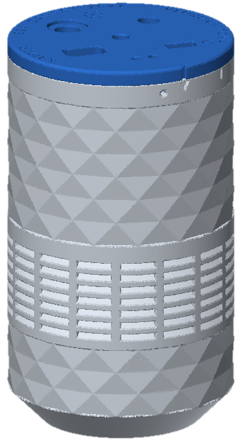
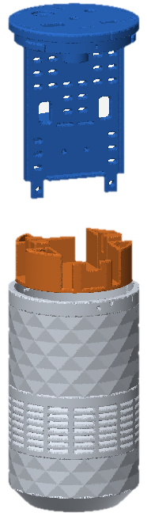
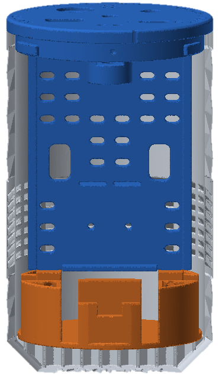

KAIPER
KAIPERCould liquid water exist here?
Habitability index
Humidity, temperature, and UV radiation.
Standard, well-tested sensorsThe CanSat team of Escola Vedruna Tona
A high school CanSat team.

It fits in one hand.
“Kai”: sea / ocean in Hawaiian, plus Kuiper Belt
Our new can, designed in three parts: shell, core and sled.


On the way down, Kaiper measures the air it falls through.
Photos of our printed can and our sessions with our mentor.
Our mission: mapping an invisible ocean.
How a satellite the size of a soda can works.
The team and the story behind the name.
Tools for the mission, like our ground station.
Write to us or support the project.
With the support of
We’re looking for companies and people who want to support the project.
CanSat is an educational program of the European Space Agency (ESA).
Fit everything inside a can-sized cylinder.
The CanSat is taken up high and released.
While it descends it measures temperature and pressure.
The best teams go on to the European competition.
Could liquid water exist here?
Humidity, temperature, and UV radiation.
Standard, well-tested sensorsIs this environment stable?
An inertial sensor (IMU) tracks the stability of the descent.
Our safest betWould it be shielded from radiation?
We measure how background radiation changes with altitude.
The honest question markEach of the three sensors on its own is a fairly standard, well-tested piece of kit.
The turbulence data from the IMU is the part we’re most confident will simply work.
The radiation sensor is the one honest question mark.
Here is how Kaiper is coming together.
Our new can, designed in three parts: shell, core and sled.
The outer skin of the can.
The blue lid.
The orange tray.
4th-year ESO students at Escola Vedruna Tona.
Hi, I’m Matias.
Matias, Team Kaiper
Tools made for the CanSat mission.
Receives the CanSat temperature by radio.
Works with Chrome or Edge.
Questions, ideas, or want to support Kaiper? Write to us.
For the full experience, open the original site.